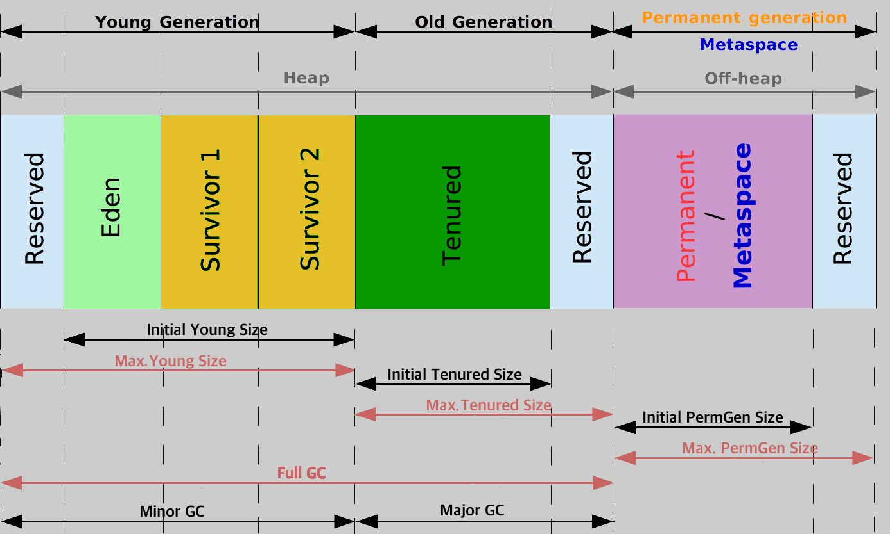
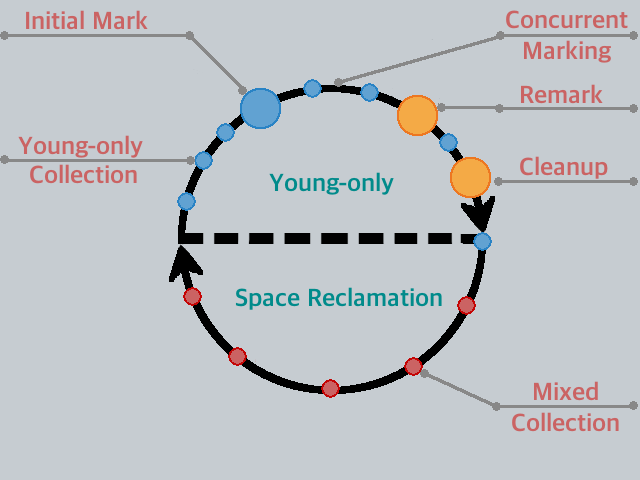
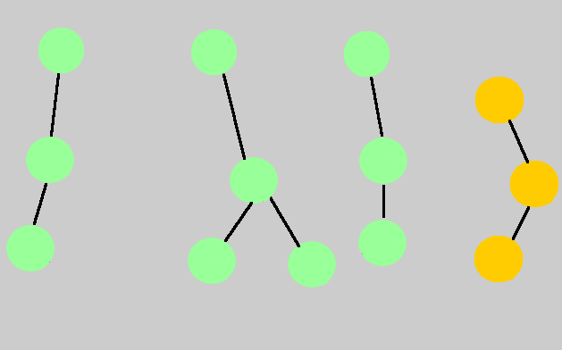
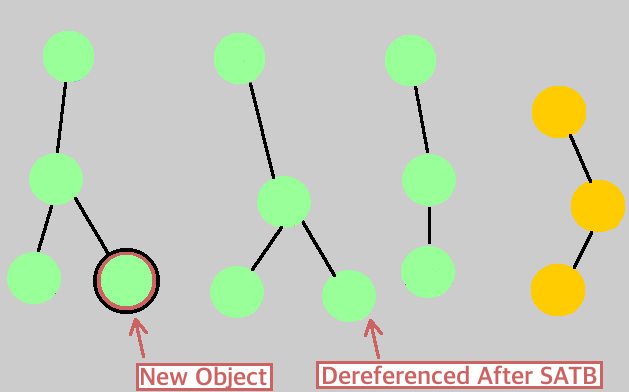
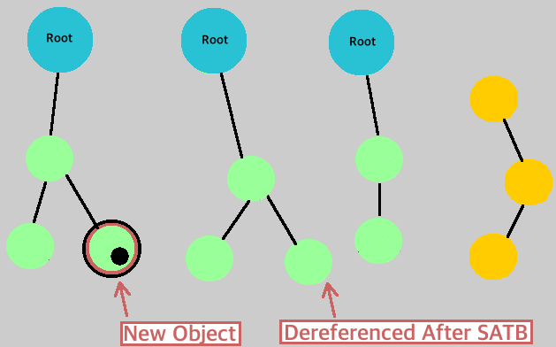
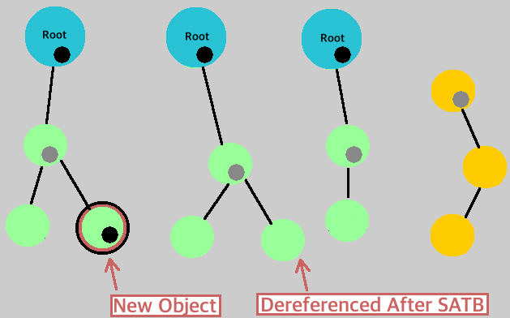
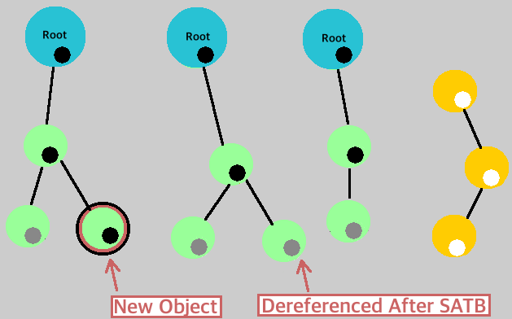
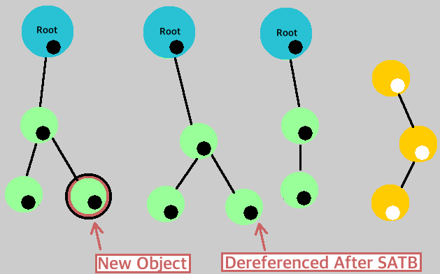

Garbage Collection - The Journey Until Java 11
Below icons are from SuperTinyIcons: https://github.com/edent/SuperTinyIcons
about: presenter


LinkedIn and my blog QR codes generated at QRStuff: http://www.qrstuff.com.
Agenda
Topics covered:- Brief walk-through:
- Garbage Collection - Basics
- Garbage Collection - Patterns
- Garbage Collection - Generational
- G1GC - How it works
- G1GC - Logging Options
- G1GC - Common Tuning Situations
- A discussion (Time permitting):
- Garbage Collection - What's Next
Garbage Collection - Basics
As a broad definition, garbage collection is the process of:
- looking up managed memory
- identify all objects that are in use (live objects)
- mark non-live objects as garbage (unused or no-reference are other common terms)
- [occasionally] reclaim memory by deleting garbage
- [occasionally] compact memory defragmenting live objects (create more contiguous space).
An unused object is one that is no longer referenced by any part of the program.
History:The first garbage collection process: Lisp, in 1959 by John MacCarthy (author of Lisp and major contributor to ALGOL fame).
Garbage Collectors - Classification
Garbage collectors can be classified with several classifiers. Few of those are tabulated below.Below numbering is only for readability. It does not indicate any precedence or priority.
| 1. Based on how collection runs | 2. Based on how objects are marked |
|
|
| 3. Based on run interval of collections | 4. Based on what collection does to objects |
|
|
Garbage Collection - Patterns
This section will list a few garbage collection patterns.Garbage Collection - Reference Counting

Garbage Collection - Mark/Sweep/Compact
Memory allocator moves pointer to the beginning of free space.Objects are added after the free memory pointer.
Garbage Collection - Copying
Memory allocator moves pointer to the beginning of free space in the new memory area. Objects are added sequentially after the free memory pointer.
Garbage Collection - Patterns Usage
| Mark/Sweep/Compact | Copying |
|
|
Garbage Collection - Generational
Java, since JDK 5 has had a generational garbage collector as its default. The generational collector divides the memory into smaller memory areas. Management of objects in different memory areas is done differently. Weak Generational Hypothesis :- Most objects do not have a long life.
- It is usually rare for an older generation object to reference a young generation object.
Generational GC - Pictorial
Overview :- Objects initially allocated to the young Eden region.
- Objects that live past a collection are promoted to Survivor and subsequently to Tenured.
- Collection patterns can be different for each generation to deliver an optimal performance.

Picture influenced by Jörg Prante's writeup: http://jprante.github.io/2012/11/28/Elasticsearch-Java-Virtual-Machine-settings-explained.html
Generational GC - Collection
Explanation:- heap is broken into smaller areas (sub-heaps).
- newly created objects are allocated to a young area called Eden.
- there is a per-thread region for reducing synchronization - Thread Local Allocation Buffer (TLAB)
- Eden itself divided into TLAB sections for individual threads and a common area.
- different GC processes for each generation, young gc typically is all-at-once, stop-the-world, copying collector.
- objects that stay "alive" longer get moved to older generation.
- Permanent Generation is for storing class/method definitions and static content.
Generational GC - Steps
Typical steps in a Generational GC:Generational GC - Types - Older
There are a few different types of collectors:- Serial Collector
- Freezes all application threads to collect garbage.
- Designed for single-thread and tiny heap sized (~100 MB) apps.
- Low memory footprint makes it good for for mobile or small apps.
- Parallel Collector a.k.a Throughput collector - Java 1.5 onwards, default collector Java 1.5, 1.6, 1.7 and 1.8 (* ↓)
- Young gen., only has the parallel (scavenge) collection.
- Tenured gen. earlier had a default serial collector (later versions changed default to parallel old collector).
- (*) G1GC was originally planned as default for Java 1.8 but was deferred until Java 9.
- Concurrent Mark-Sweep (CMS) Collector (mostly*) - available Java 1.5 onwards until Java 1.8
- By default, Young gen. uses a serial collection and Tenured gen. use a CMS collector.
- Does not compact by default, to make GC a low-pause, low-latency, but causes heap fragmentation.
- An eventual fill up of old memory causes a fall-back to a STW M/S/C that results in performance degradation.
- Focuses on live objects and defers garbage handling, until crisis time.
- ParNew does the synchronization needed for CMS that Parallel Scavenge cannot.
Generational GC - Types - Why New
Some notes on the existing garbage collectors:- Mostly focused on live objects, not on garbage (an exact antithesis of the name).
- The contiguous memory area arrangement reduces flexibility of "moving the walls".
- Required different collectors on young and tenured generations to achieve performance benefits.
- By default, unpredictable and inconsistent pause-times and lesser number of STW GCs.
- Need heavy tune-ups to stabilize pause times due to non-compacting nature of recent collectors.
- Not performant for large memory heaps (large heaps are common these days).
- Either highly prone to fragmentation or demand the need for smaller heaps for predictable times.
- Not much effort put into re-use of duplicated content.
G1GC is the new default collector since JDK 9.
Garbage First Garbage Collector
Java 9 introduced a new default Generational Garbage Collector. This new collector is called Garbage First Garbage Collector (G1GC). Recommended slide deck: https://www.slideshare.net/MonicaBeckwith/java-9-the-g1-gc-awakens.
Recommended slide deck: https://www.slideshare.net/MonicaBeckwith/java-9-the-g1-gc-awakens.
Garbage First Garbage Collector - Regions
Each block of memory is called a Region. Heap is compartmentalized into virtual non-contiguous memory regions.
G1GC - Regions
Some observations :- A region is a contiguous unit of memory allocation and space reclamation.
- Regions are formed by dividing the heap into ~ 2048 or more blocks of equal size.
- The region sizes can range from 1 MB to 32 MB depending on the heap size.
- The memory manager assigns a region as free, eden, survivor, tenured or part of a humongous allocation.
- Humongous objects occupy complete (for larger objects, contiguous) regions.
- Humongous objects are defined as objects with size > 50% of region size.
- Humongous objects are not allocated in young regions.
- G1GC has a consistent pause time-target that it tries to meet (soft, real time), hence region sizes are controlled.
G1GC - Region Math
Calculating regions on a 9GB heap- Convert heap size to MB → 9GB = 9 x 1024 MB = 9216 MB.
- Approximate region size for 2048 regions → 9216 MB ÷ 2048 regions = 4.5 MB per region
- Regions for factor of 2 below the approximate region size (= 4) → 9216 ÷ 4MB = 2304 regions.
- Regions for factor of 2 above the approximate region size (= 8) → 9216 ÷ 8MB = 1152 regions.
- Since 2304 is closest to and above 2048, it is chosen as the number of regions to use.
- Each region, in this example, is calculated to be 4MB size.
- Humongous objects, in this example, are any objects of size 2MB or above.
- A 2.5MB object occupies one region, a 13MB object will occupy four contiguous regions.
- Possible to disable this auto-calculation by setting a JVM option that overrides calculating.
- Set the flag
-XX:G1HeapRegionSizewith a numeric value (that is a power of 2).
G1GC - Explanation (Picture)
Below is a pictorial of how G1GC works under normal circumstances. Some notes :- The top semicircle is the most common GC process.
- When space is too fragmented or tenured occupancy hits a threshold, the bottom semi-circle is triggered.
- Eventually, neither process of the above will create contiguous memory for new allocations.
- Until Java 9: Heavy heap occupancy will eventually lead to a Serial collecting Full GC(single-threaded).
- From Java 10: Heavy heap occupancy will eventually lead to a Parallel collecting Full GC (multi-threaded).

G1GC - Explanation
G1GC - Young Collection - Steps
- Root Scanning: Scan local and static objects for root objects and mark in a "dirty queue".
- Update Remembered Set (RSet): All marked references in the dirty queue updated into a RSet.
- Process RSet: Detect references to objects in the collection set Young regions, from objects in Tenured regions.
- Copy Live Objects: Traverse the object graph and promote/age live objects.
- Process references: Update references to new location, process soft, weak, phantom and final references.
- StrongReference: Typical pointer allocation to an object, re-pointing to null will cause object to be collected.
- SoftReference: The reference is kept unless there is no other space for any new allocation.
- WeakReference: The reference is collected as soon as GC reaches it.
- PhantomReference: The reference enqueued for collection, retained until all references to it are either dead/weak references.
G1GC - Young-Only #1 (Survivor Promotion)
G1GC - Young-Only #2 (Tenured Promotion)
G1GC - Initial Mark
G1GC - What triggers Initial Mark
What triggers the Initial Mark :- Initiating Heap Occupancy Percent (IHOP) ↠
-XX:InitiatingHeapOccupancyPercent:
- Default value is 45, thus an Initial Mark is triggered when old gen heap size is 45% filled.
- This is just an initiating value. G1 determines via measurement what the optimal percentage should be.
- Such an adaptive HOP can be turned off by un-setting the flag (notice the -):
-XX:-G1UseAdaptiveIHOP. - Turning off the Adaptive IHOP will make the G1 collector rely on the IHOP value alone.
- This value is usually considered a soft threshold, reaching this limit may not immediately trigger Initial Mark.
- Guaranteed Survivor Space Availability Percent ↠
-XX:G1ReservePercent:
- Default value is 10, thus an Initial Mark is triggered when survivor space availability falls to 10% filled.
- This is a flat unchanging value. G1 honors the value set during startup.
- This value supersedes the Heap Occupancy Percentage triggers.
- This value is usually considered a hard threshold, reaching this limit will immediately trigger Initial Mark.
- A Humongous allocation is reached:
- Humongous objects are objects with a size of 50% or greater than, a region size.
- Directly allocated to Old gen. regions to avoid the potentially costly collections and moves of young gen.
- G1GC tries to eagerly reclaim such objects if they are found to not have references after many collections.
- Can be disabled by a
-XX:-G1EagerReclaimHumongousObjects, may need to turn on Experimental options.
G1GC - Concurrent - Marking

G1GC - Concurrent Marking - Pictorial
The below pictures show a concurrent mark liveness check (tri-color painting).Gray = To check, Black = Live, White = Dead.
| 1. Snapshot-at-the-beginning (SATB) | 2. Objects added/dereferenced | 3. Root Scan |
|  |  |  |
| 4. Root Painting | 5. Children Painting | 6. Completion |
|  |  |  |
G1GC - Remark
G1GC - Cleanup
G1GC - Mixed Collection
G1GC - Metaspace
Some notes on MetaSpace versus PermGen:- PermGen allocated as a part of JVM Heap.
- PermGen is implicitly bounded since it is allocated at startup.
- PermGen could not take advantage of O/S memory swaps.
- Default PermGen size is 64M (85M for 64-bit scaled pointers).
- Metaspace (or rather metaspaces) are not a panacea for
OutOfMemoryErrors. - Metaspace is explicitly bounded from the O/S memory, taking up unlimited amounts otherwise.
- Initial Metaspace Size is set by
-XX:MetaspaceSize(replaces -XX:PermSize), default = 21.8M. - Max Metaspace is set by
-XX:MaxMetaspaceSize(replaces -XX:MaxPermSize), default = unlimited. - When porting from PermGen, simply replace
-XX:PermSizeand-XX:MaxPermSizewith the new options.
G1GC - Gory Details
Explanation:- Pause time is used to calculate the mix and is controlled by
-XX:MaxGCPauseMillis(default = 200). - Pause time intervals controlled by an ergonomic goal that is not initially set.
- controlled by
-XX:GCPauseTimeInterval(no default).
- controlled by
- G1 continues with the young collection until either of the below is reached:
- reaches a configurable soft limit known as the
-XX:InitiatingHeapOccupancyPercent(default = 45). - reaches the configurable strict limit of
-XX:G1ReservePercent(default = 10).
- reaches a configurable soft limit known as the
- If either constraint is met, it triggers the start of a Concurrent GC.
- Concurrent Mark includes both STW and concurrent activities.
- Concurrent Mark determines liveness of objects on a per-region basis.
- G1 goes after regions that have the most garbage, it is called Garbage-First.
- Concurrent Mark is followed by a Remark and a Cleanup.
- Cleanup activity is used to determine if a Space Reclamation is needed.
- Checks the percentage of garbage (waste) space to be below
-XX:G1HeapWastePercent(default = 5). - Collector picks up a minimum number of regions based on
-XX:G1MixedGCCountTarget(default = 8).- The total number of tenured regions are divided by the above number and are picked up for collection.
- After each collection, the liveness of the tenured region is re-evaluated.
- Continues Space Reclamation if the waste percentage is still greater than the
-XX:G1HeapWastePercent.
Generational Garbage Collection - Summary
Common JVM options to use a specific collector:| Type | Young GC | Tenured GC | JVM Option |
|---|---|---|---|
| Serial GC | Serial | Serial | -XX:+UseSerialGC |
| Parallel GC | Parallel Scavenge | Parallel | -XX:+UseParallelGC -XX:+UseParallelOldGC |
| CMS GC | Parallel New | CMS | -XX:+UseParNewGC -XX:+UseConcMarkSweepGC |
| G1 GC | G1GC | -XX:+UseG1GC |
|
Differences in collectors:
| Type | Parallel | Concurrent | Young GC | Tenured GC | Feature |
|---|---|---|---|---|---|
| Serial GC | - | - | Serial | Serial | Batch processing |
| Parallel GC | Yes | - | Parallel | Parallel | High throughput |
| CMS GC | Yes | Yes | Parallel | Parallel & Conc. | Low Pause |
| G1 GC | Yes | Yes | Parallel | Parallel & Conc. | Low pause & High throughput |
Recommended reading material: https://blogs.oracle.com/jonthecollector/our-collectors.
G1GC - Logging Options
In this section salient logging setup options are discussed.G1GC - Check Default Values
G1GC has several options that can be tuned for performance.- Finding out what flags exist and what their default values are, is important.
- Print initial defaults for the operating system (caution, this is a long list, best to redirect to a file):
java -XX:+PrintFlagsInitial -version
java -XX:+PrintFlagsInitial MyApplication - Print final defaults for the jvm, with overrides on the defaults (caution, this is a long list, best to redirect to a file):
java -XX:+PrintFlagsFinal -version
java -XX:+PrintFlagsFinal MyApplication - Print current flags:
java -XX:+PrintCommandLineFlags -version
java -XX:+PrintCommandLineFlags MyApplication
The
-version is used as the executable above. As is shown, it can be replaced with any java class with a main(...) as well.G1GC - Logging G1GC processes
Common JVM options to print GC logs:Unified logging changes (for reference use):
java -Xlog:helpUnderstanding the content in the table: -Xlog : <tags to log>[=<log level>] [: <output> [: <decorations> ]]
| GC Type | Option | Meaning |
|---|---|---|
| Pre-G1GC | -Xloggc:/path/to/gc.log | Destination path for the logs. |
| Pre-G1GC | -XX:+PrintGCDetails | Increases the verbosity of logged content. |
| Pre-G1GC | -XX:+PrintGCDateStamps | Log date and timestamp of the collection. |
| G1GC | -Xlog:gc |
Log messages with gc tag using info level to stdout, with default decorations. |
| G1GC | -Xlog:gc,safepoint |
Log messages with either gc or safepoint tags (exclusive), both using 'info' level, to stdout, with default decorations. |
| G1GC | -Xlog:gc+ref=debug |
Log messages with both gc and ref tags, using debug level, to stdout, with default decorations. |
| G1GC | -Xlog:gc=debug:file=gc.txt:none |
Log messages with gc tag using debug level to file gc.txt with no decorations. |
| G1GC | -Xlog:gc=trace:file=gc.txt:uptimemillis, pids:filecount=5,filesize=1m |
Log messages with gc tag using trace level to a rotating logs of 5 files of size 1MB, using the base name gc.txt, with uptimemillis and pid decorations. |
| G1GC | -Xlog:gc::uptime,tid |
Log messages with gc tag using info level to output stdout, using uptime and tid decorations. |
| G1GC | -Xlog:gc*=info,safepoint*=off |
Log messages with at least gc using info level, but turn off logging of messages tagged with safepoint. |
Recommended slide deck: https://www.slideshare.net/PoonamBajaj5/lets-learn-to-talk-to-gc-logs-in-java-9.
G1GC - Common tags
Some common tags used in logging:| Region | region |
| Liveness | liveness |
| Marking | marking |
| Remembered Set | remset |
| Ergonomics | ergo |
| Class Histogram | classhisto |
| Safepoint | safepoint |
| Task | task |
| Heap | heap |
| JNI | jni |
| Promotion(Parallel) Local Allocation Buffer | plab |
| Promotion | promotion |
| Reference | ref |
| String Deduplication | stringdedup |
| Statistics | stats |
| Tenuring | age |
| Thread Local Allocation Buffer | tlab |
| Metaspace | metaspace |
| Humongous Allocation | alloc |
| Refinement | refine |
| Humongous | humongous |
| String Symbol Table | stringtable |
G1GC - Common Tuning Situations
In this section some tuning options for common issues are discussed.Before we get there …
JVM optimizes for classes of devices. A server-class machine is defined as one with:
- two or more physical processors
- two or more GB of physical memory
Some defaults for a server-class machine:
- Default garbage collector = G1GC.
- Initial heap size defaults to 1/64th of physical memory.
- Maximum heap size defaults to 1/4th of physical memory.
- Default tiered compiler with C1 and C2 code caches.
- C1 pre-compiles and optimizes non-profiled (non-dynamic) code.
- C2 profiles code and defers optimizations.
JVM uses ergonomics to determine behaviour and environment-based heuristics to improve performance.
G1GC - Performance definitions
G1GC tuning is done to meet one of the below performance metrics:- Throughput—the percentage of total time not spent in garbage collection, considered over long periods of time.
- Pause time—the length of time the application execution is stopped for garbage collection to occur.
- GC overhead—the inverse of throughput, that is, the percentage of total time spent in garbage collection.
- Collection frequency—how often collection occurs, relative to application execution.
- Footprint—a measure of size, such as heap size.
- Promptness—the time between when an object becomes garbage and when the memory becomes available
G1GC - How to tune
There are a few steps to performance tuning happiness.Follow the EMPATHY model.
- Execute - execute the application to determine issues visually.
- Monitor - use appropriate alerts/tools/logs to monitor.
- Profile - identify the areas that need special attention.
- Analyze - determine what needs to be done to fix issues.
- Tune - set the right parameters for sizes, ages, threads etc.
- Hammer - test out each set of parameters thoroughly.
- Yippee - beer time. 🍻
If you decide to increase the number of parallel threads to gain performance, remember that:
Amdahl’s Law:
... the nature of this overhead (in parallelism) appears to be sequential so that it is unlikely to be amenable to parallel processing techniques. Chandra’s Law 🤓:
Providing three copies of a book does not get a person read it three times faster.
G1GC - Frequent Full GC
Frequent Full GCs are observed- Usually caused by heavy heap occupancy.
- Logs contain the phrase Pause Full (Allocation Failure).
- This is typically preceded by a to-space exhausted message.
- Steps to mitigate:
- Try to reduce the humongous objects.
- Increase the java heap region size (by
-XX:G1HeapRegionSize). - Increase number of concurrent threads (by
-XX:ConcGCThreads). - Force earlier marking by either:
- Lower the
-XX:G1ReservePercent - Disable the
-XX:G1UseAdaptiveIHOPand manually set-XX:InitiatingHeapOccupancyPercent.
- Lower the
-
Full GCs can also be caused by
System.gc()calls in some library.
Effects of such can be mitigated by:
- Full GC frequency can be mitigated by
-XX:ExplicitGCInvokesConcurrent. - Last resort, completely ignore
gc()calls with-XX:DisableExplicitGC.
- Full GC frequency can be mitigated by
G1GC - Long Young Collection
Young Collections seem to take too long- Young collection time is proportional to the size of the young generation.
- Reducing the
-XX:G1NewSizePercentreduces the young generation size. - Sudden spikes in the application may cause influx of live objects.
- Limiting the maximum size of the young generation can help.
- Maximum young generation size can be controlled by
-XX:G1MaxNewSizePercent.
G1GC - Long Mixed Collection
Mixed Collections seem to take too long- Determine which generation is taking the time (Set
gc+ergo+cset=tracein logging). - The logs will then show predicted young region and predicted old region times.
- Spread reclamations to more mixed collections via
-XX:G1MixedGCCountTarget. - Alter (typically: reduce) threshold of collecting regions with high live occupancy:
-XX:G1MixedGCLiveThresholdPercent. - Alter (typically: reduce) space reclamation in high occupancy regions via
-XX:G1HeapWastePercent.
What's next in Garbage Collection?
This section will list a few new garbage collectors with their offered features.Shenandoah
(Redhat ⇢ OpenJDK)- Region-based, non-generational collector, based on the G1GC.
- Adds an indirection, called Brooks Pointer (* ↓) to each object, GC threads can compact heap while app is running.
- Young collection equivalent is run in a concurrent-partial mode.
- Uses a concurrent mark and a concurrent compact for longer lived objects.
- Evacuation and reference updates to run concurrently with application threads.
- In case of slower collection cycles, more cycles are stolen from application, but application is not halted.
- Pause times to be independent of heap size (be it 2GB or even 100GB).
- Already being improved (v2.0) to focus GC on regions where the writes happen.
- Best suited where responsiveness and predictable pauses are valued over more cpu cycles and space.
- More reading material:
ZGC
(Oracle ⇢ OpenJDK)- Region-based, non-generational collector, based on G1GC.
- Uses colored pointers with load barriers (* ↓) to allow for concurrent ops.
- Load barriers act as the intermediate in determining if the object was relocated.
- Designed for very large memory heaps.
- Low GC pause times, not exceeding 10ms.
- No more than 15% application throughput reduction compared to using G1.
- Aims at simplifying tuning of GCs as well!
- Best suited for large memory usage and predictable throughput while consuming less space.
- More reading material:
- OpenJDK Project (http://openjdk.java.net/projects/zgc/)
- ZGC Wiki (https://wiki.openjdk.java.net/display/zgc/Main)
- Per Liden (Lead) Interview (https://jaxenter.com/zgc-interview-per-liden-139985.html)
- (*) Memory Barriers/Fences (https://mechanical-sympathy.blogspot.com/2011/07/memory-barriersfences.html)
Epsilon (or No GC)
(Redhat ⇢ OpenJDK)- Handles memory allocation but does not actually reclaim memory.
- Completely passive GC with just bounded memory allocation and lowest latency guarantees.
- Linear allocation in a single chunk of memory.
- Uses trivial lock-free Thread Local Allocation Buffers (TLABs) that do not need managing.
- Popular commercial implementations have a similar NoGC option already.
- Best suited for:
- performance testing the app (without GC latency).
- extremely short lived jobs.
- memory pressure testing.
- More reading material:
Time's up :: ¯\_(ツ)_/¯
LinkedIn and my blog QR codes generated at QRStuff: http://www.qrstuff.com.